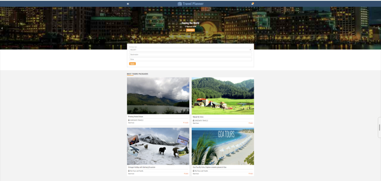

A modern travel booking and destination management platform developed using ASP.NET, MySQL, JavaScript, Bootstrap, HTML, and CSS. The system helps users explore destinations, manage bookings, and organize travel plans through a responsive interface.
Academic Web Development Project
Travel Management & Booking Web Application
Users can browse destinations, explore travel packages, search locations, and make trip bookings through a user-friendly system. The admin panel helps manage bookings, packages, and user activity efficiently.
Developed efficient booking workflow, destination filtering system, responsive dashboard management, and optimized database handling for travel package management.
Successfully developed a travel planning and booking platform that allows users to explore destinations, manage bookings, and access travel packages through a responsive and user-friendly interface. The system provides efficient booking management and streamlined administration.
← Back to Portfolio